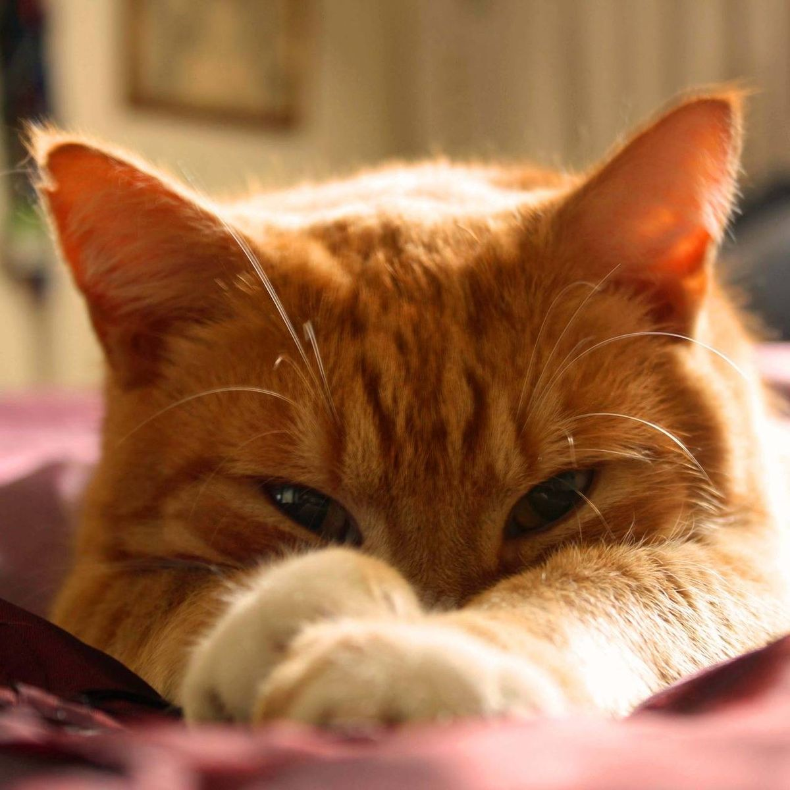
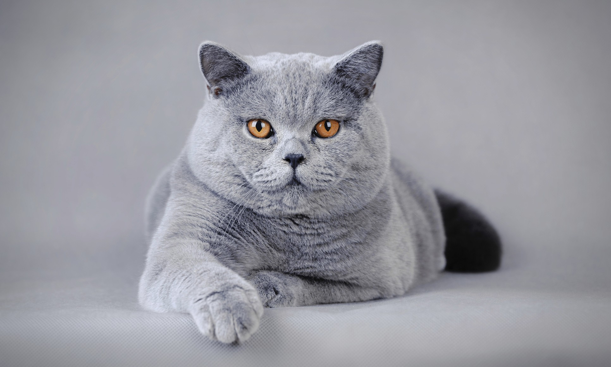

Gatos en adopcion
Nuestros Objetivos principalmente son educar
a la comunidad en los conceptos de tenencia responsable
y
respeto hacia los gatos, Ayudar a controlar la superpoblación
felina por métodos no violentos, fundamentalmente esterilizando
para así mejorar su calidad de vida.
Nuestros gatos que buscan familia:
Ginger
Timmer